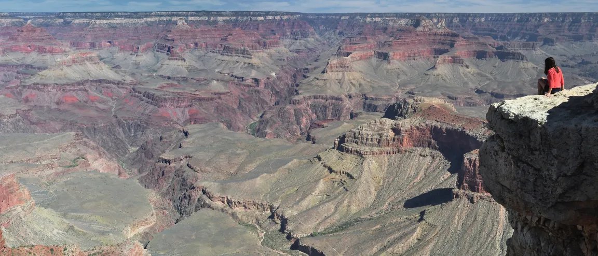
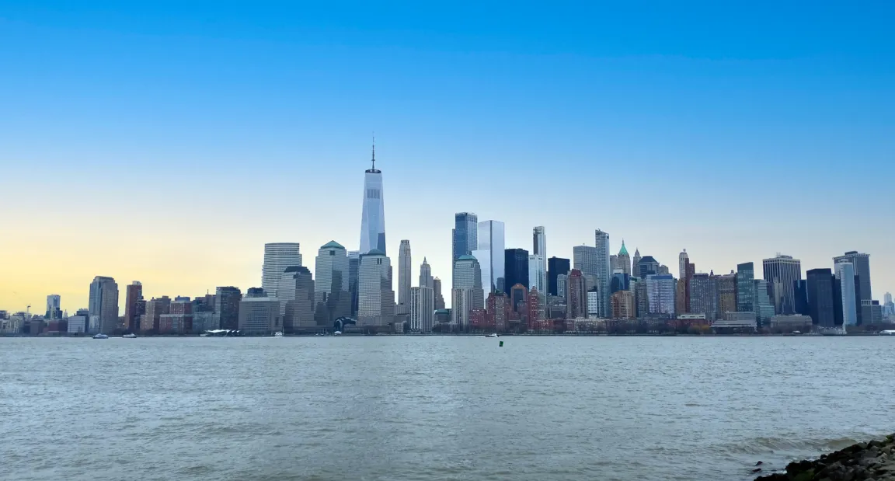
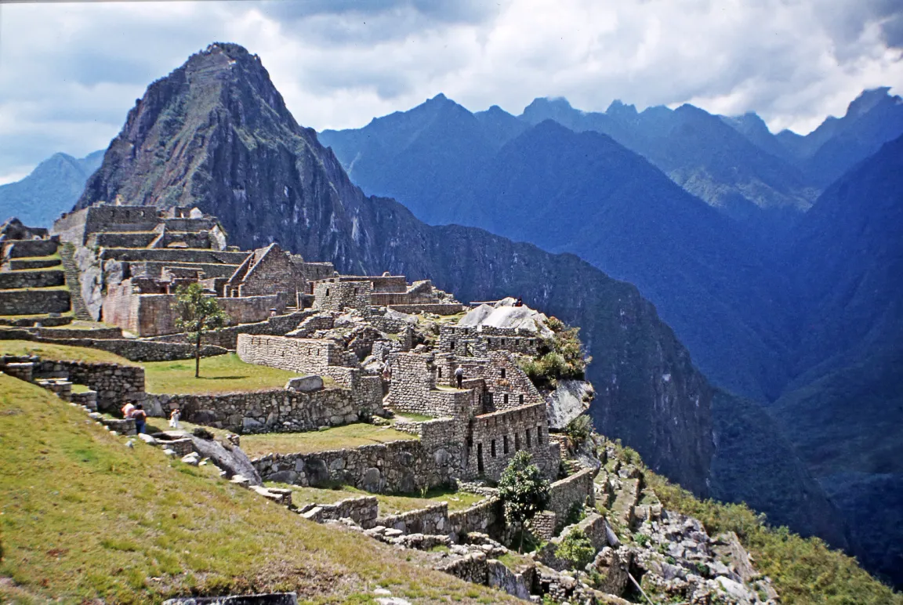
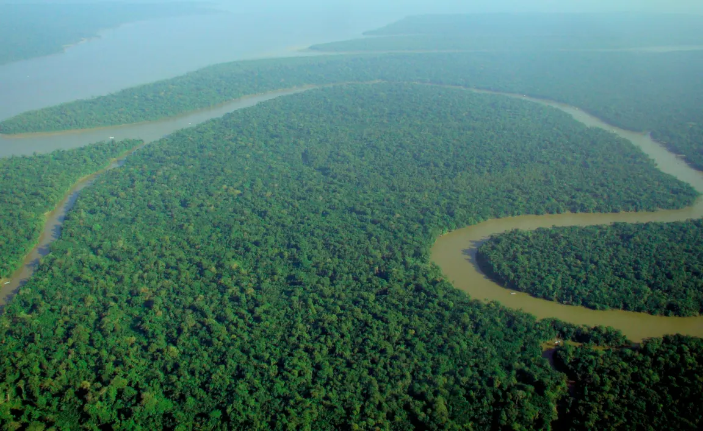

⛰️ Západ: mladá pohoří
Podél Tichého oceánu se táhnou Kordillery (se Skalnatými horami) a Andy – nejdelší pohoří světa. Leží na okraji tichomořské desky, proto tu jsou sopky a zemětřesení.
Pro 7. ročník: Severní a Jižní Amerika – poloha států, příroda a hospodářství.
Amerika se táhne od polárních oblastí na severu až skoro k Antarktidě. Díky tomu v ní najdeš všechna podnebná pásma – od tundry v Kanadě přes deštný prales v Amazonii po chladnou Ohňovou zemi. Tvoří ji Severní a Jižní Amerika, spojené úzkou Střední Amerikou.
Podél Tichého oceánu se táhnou Kordillery (se Skalnatými horami) a Andy – nejdelší pohoří světa. Leží na okraji tichomořské desky, proto tu jsou sopky a zemětřesení.
Rozlehlé nížiny s velkými řekami: Mississippi v USA, Amazonka (nejvodnatější řeka světa) v Brazílii; travnaté prérie a pampy, na východě staré vysočiny.
USA mají největší ekonomiku, Kanada je rozlohou druhý největší stát světa, Brazílie největší stát Jižní Ameriky. Chile těží měď, Brazílie pěstuje kávu.
Reliéf mění podnebí: hory zachytí vlhký vzduch z oceánu, a za nimi proto bývá sucho. Na jižní polokouli leží poušť Atacama, nejsušší místo na Zemi. Typická chyba: hledat Andy na východě – obě velká pohoří jsou vždy u západního pobřeží.
Dopravu zkracuje Panamský průplav, který spojuje Atlantský a Tichý oceán; lodě nemusí obeplouvat celou Jižní Ameriku.
Proč je na západě obou Amerik hodně zemětřesení a sopek?
✅ Západ Ameriky leží na okraji tichomořské litosférické desky – proto sopky, zemětřesení i mladá pohoří.
Porovnej reliéf, vegetaci a osídlení. Snímky spojují polohu na mapě s přírodními podmínkami i lidskou činností.




Amerika se táhne od polárních oblastí až téměř k Antarktidě, proto tu najdeme všechna podnebná pásma. Pohoří (Kordillery a Andy) se táhnou podél západního pobřeží, na východě leží nížiny a staré vysočiny.